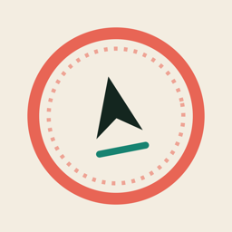
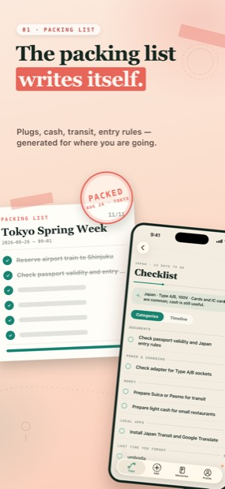
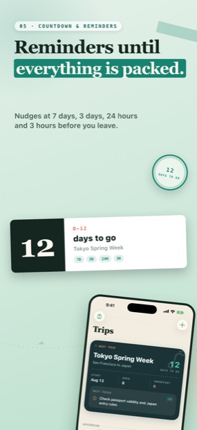
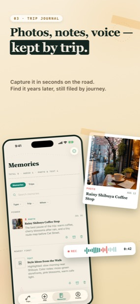
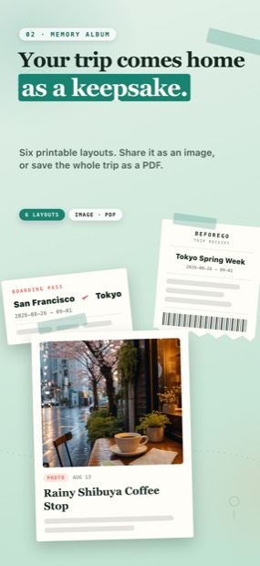

Stop packing from memory.
BeforeGo turns travel prep into a checklist you actually finish — documents, packing, adapters, money, apps — and then remembers what you forgot, so the next trip starts smarter.
Download on the App Store



What it does
Every trip has the same twenty small things, and one of them always gets missed. BeforeGo makes that list explicit, keeps it in front of you, and carries the lesson forward.
Lists that know where you are going
Create a trip, pick a destination, and start from a practical preparation list — documents, packing, power adapters, money, apps, reminders, personal notes.
Visible until it is done
What is finished and what still needs attention, split by phase. Urgent items stay on your Home Screen through reminders and widgets, not buried in a note.
A journal, not just a list
Notes, photos and voice memories from each trip stay with the trip — including the things you wished you had brought.
The next trip starts smarter
When a trip ends, whatever you never ticked off is collected for you in one tap — and comes back three days before the next trip as “last time you forgot”. Forget the same thing twice and it still shows up once.
Yours, on your phone
No account to create and nothing to sign up for. Open it and start a trip.
Ten languages
English, 简体中文, 繁體中文, 日本語, 한국어, Français, Deutsch, Italiano, Português, ไทย.
Hear about real updates
No newsletter, no schedule — just an email from the developer when there is an actual new version or a feature worth knowing about. Reply to any of it and a human reads it.
Support
Questions, feedback, a bug, or help with a purchase? Email qinqiangji@gmail.com. Every message is read, usually answered within two business days.
BeforeGo is made for personal travel organization. It does not replace official visa, safety, health, airline or government guidance — always verify important requirements with official sources before you travel.